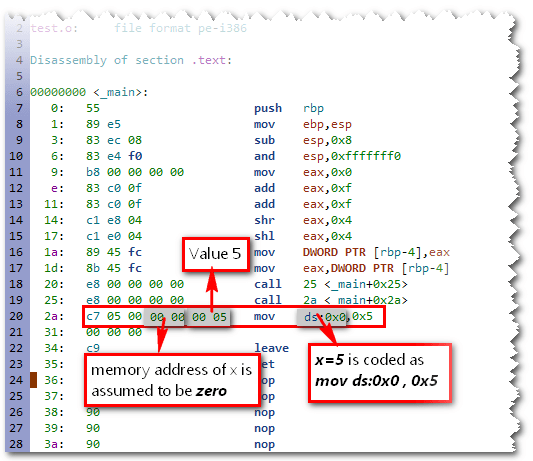
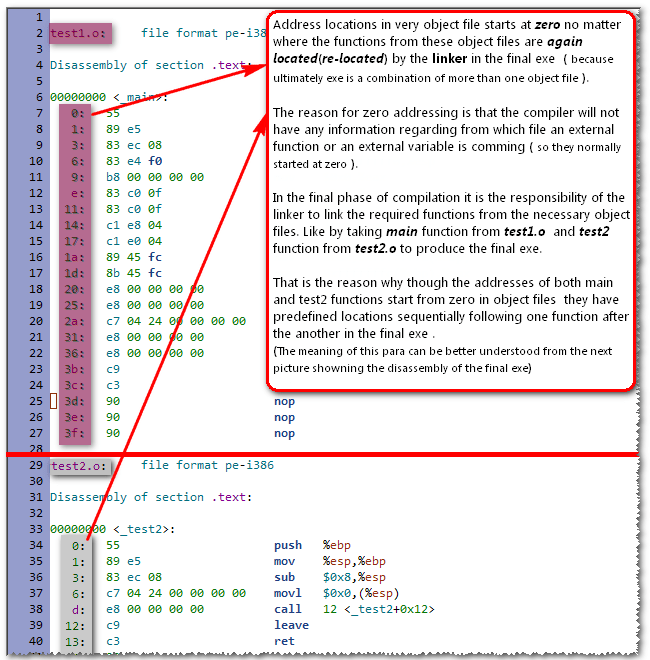
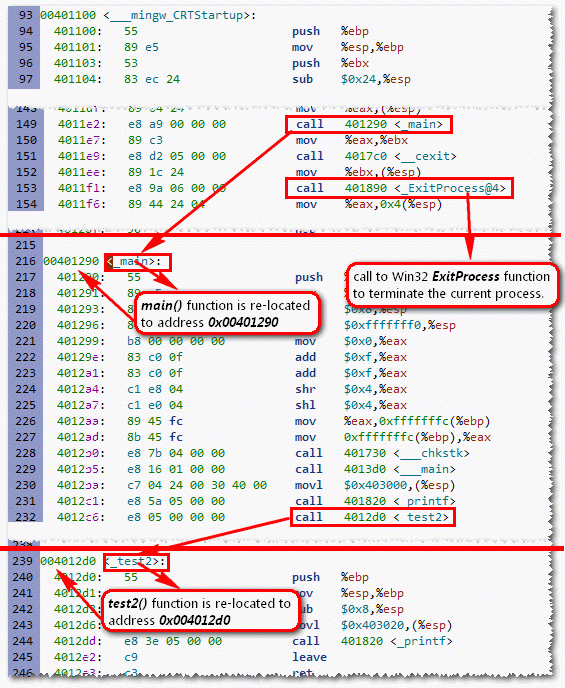
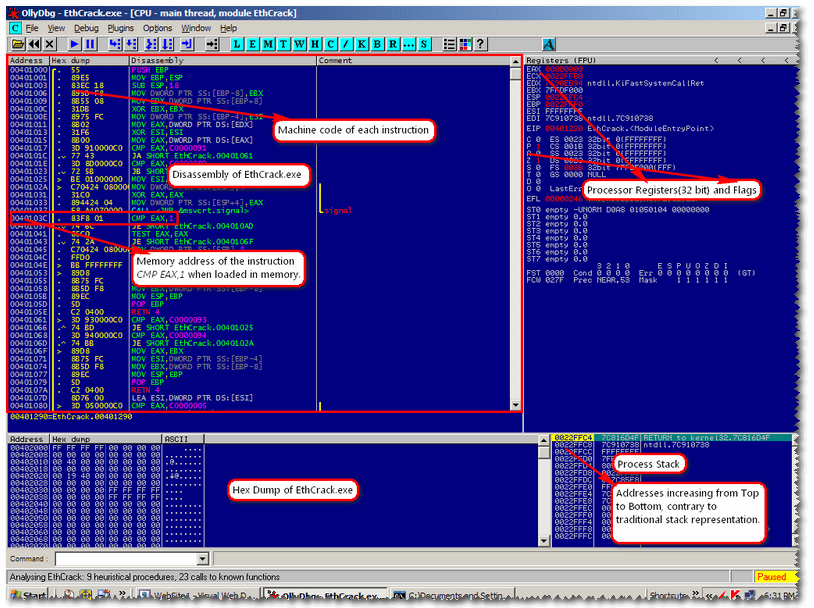
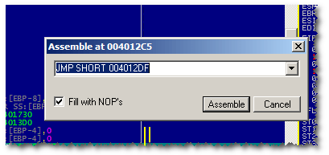
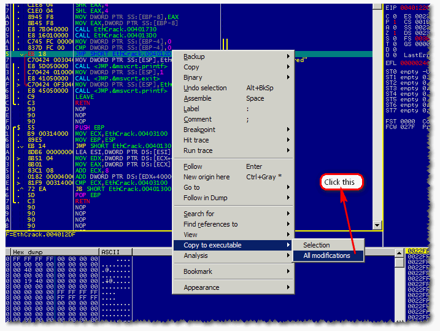
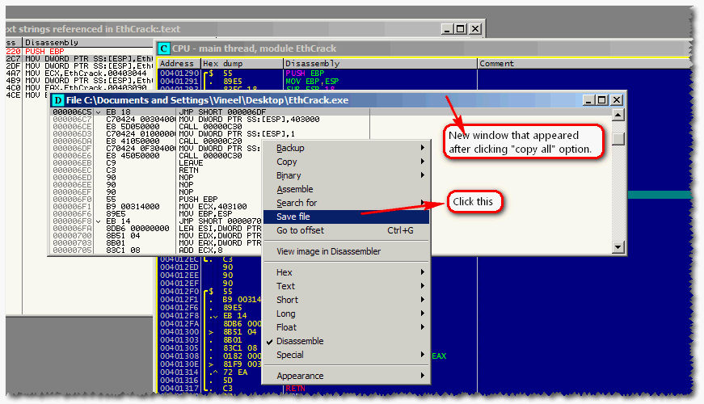
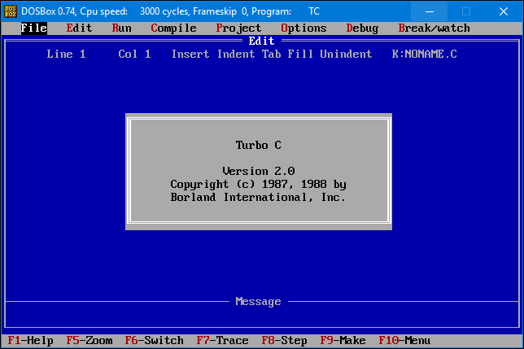

Introduction
Compilers are surely the complex programs of all times. Even today, writing a compiler with minimum set of tools is considered to be challenging. This tutorial scratches the surface of different compiler phases involved in translating a given source code to executable and also shows how this information is useful in context of reverse engineering.
GNU compiler collection provides an excellent set of tools for dissecting the compilation process and to understand the working of bits and bytes in the final executable. For this tutorial I am using the following tools and considers C language to illustrate the examples.
- Dev-Cpp is a IDE with GNU C compiler collection(Mingw) as backend
- OllyDbg An excellent debugger/reverse engineering tool
for Linux environment are also available for Windows(thanks to Many people don’t know that the powerful programmer tools that are available Cygwin/Mingw). Dev-Cpp is an IDE which consists of entire GNU compiler collection(GCC). This IDE uses gcc.exe, g++.exe for compiling C, C++ programs and gdb.exe for debugging. Also, The Dev-Cpp’s installation(c:\dev-cpp\bin) directory consists of all the GNU compiler tools. To start this tutorial set the PATH variable to Dev-Cpp’s bin directory as we will be working completely from the command prompt and not going to use the IDE.
For debugging, using command line GNU Debugger (gdb.exe) may seem daunting. To compensate this, we have an excellent user mode debugger for Windows called OllyDbg. This helps in debugging a running process or a normal exe or dll file.
Preprocessing
Preprocessing is the first phase of C/C++ Compilation. It is the act of processing(textual substitutions) the input sources before being handed over for parsing(i.e., before splitting in to tokens). The existence of preprocessing phase in the first place is very specific to C/C++ languages for historic reasons. Let’s consider the following code to understand what this phase will do
#define PI 3.14156
main() {
float f1;
f = PI*2;
}
Assuming this code is saved as test.c, issue the following command(remember compiler options are case-sensitive) {gcc -E test.c}. ‘-E’ switch stops the compilation process after preprocessing. Now gcc.exe will produce the following output.
# 1 "test.c"
# 1 "<built-in>"
# 1 "<command-line>"
# 1 "test.c"
main() {
float f1;
f = 3.14156*2; // Preprocessor macro substituted
}
The preprocessing phase of the compiler replaced all preprocessor directives like PI e.t.c in the output. To keep the output simple I have not included any header files. By observing the output we can conclude few points.
- Preprocessor will not compute the expression values. For example in the above output the preprocessor just replaced PI with its macro definition and the expression 3.14156*2 is left as it is
- Preprocessor don’t check for syntax errors because the above output contains no compiler errors even though we used a variable f without declaring it
With this information, what will be the value printed by printf in the following example?
#define Add(x,y) x+y
#define Sub(x,y) x-y
#define AddMulSub(x,y) Add(x,y)*Sub(x,y)
main() {
printf("%d",AddMulSub(10,2));
}
Many of us will try to solve the above snippet as Add(10,2)Sub(10,2) => 128 => 72 (because Add(10,2) = 10 + 2 = 12 and Sub(10,2) = 10 - 2 = 8) but this is incorrect because from previous observation we know that preprocessor will not evaluate expressions. So, AddMulSub(10,2) is expanded as Add(10,2)*Sub(10,2) and this again replaced with Add,Sub macros as 10 + 2 * 10 - 2 = 10 + (2 * 10) - 2 = 28
Compilation
Compilation phase translates the output file from preprocessor in to architecture specific assembly code. It is one of the core phases of a compiler. It comprises of following 4 stages
Lexical Analysis
The responsibility of a lexical analyzer(or Lexer for short) is to split the given program in to valid language tokens(or lexems). For example consider the following code.
main() {
c = a << b;
}
Now the Lexer recognizes the above code as
Identifier(main) LParen RParen LBrace Identifier(c) AssignmentOperator Identifier(a) LeftShiftOperator Identifier(b) Semicolon RBrace
In the above output from lexer we can observe that $«$ is recognized as LeftShiftOperator not as LessThan followed by a LessThan. In C, whenever the lexer encounters these kind of situations it tries to find the largest possible token(lexem).
Syntax Analysis
The responsibility of a Syntax Analyzer is to construct the parse tree from the above tokens generated by Lexer. Syntax Analyzer tries to find whether the statements present in the input program are valid or not according to the grammar of the language. For example, consider the following expression
c = a+b*;
Here the syntax analyzer fails to construct the parse tree for the expression, because, In C language a+b* is an invalid expression.
Semantic Analysis
Once the syntax analyzer has constructed the parse tree for a program the semantic analyzer will try to check the meaning of the program. The most important feature of semantic analyzer is Type Checking. For example, consider the following statement.
floatX2 = floatX1 + 10;
In the above statement the semantic analyzer converts the integer value 10 to floating point value 10.0 i.e., it tries to convert the data from one type to other for performing the desired operations.
The conversion between int to float is required in the above statement because the internal representation of int is different from float.
Code Generation
Once the program passes above stages the compiler translate the high level program in to its equivalent assembly language program(may not have one-one correspondence due to code optimizations)
add() {
printf("Add Routine");
}
main() {
add();
}
now assuming the program is saved as test.c. Issue the command {gcc -S -masm=intel test.c}. -S instructs the compiler to stop after the generation of assembly code.
By default, GCC uses AT&T assembly language syntax but as we are working in Windows we feel homely if GCC can generate MASM like assembly syntax. This is exactly what -masm=intel (Machines Assembly) option do. The above command automatically generates a file named test.s. This is a text file and can be viewed in text editor.

Observe the above code, in line 14 even though test.s contains no definition for printf, a call is made to printf function. How can the compiler produce the final executable for the above program without knowing the definition of printf? The answer is simple, compilation have no idea on where the function(printf) is actually located(glibc). It only checks for the prototype(function signature). If function prototype exists(here in stdio.h) and there is a mismatch in the prototype of the calling function(printf) then the compiler issues an error (test.c:5: error: too few arguments to function `printf’). The scenario where the function don’t have a prototype in the source file is dealt in linker phase(will be discussed later). The compiler only know how to convert a given high level language function to an equal assembly language instructions.
Similarly, whenever your program contains an external variable(like external function printf) the machine code generated for the memory address of that variable is assumed at Zero, this is because, the compilation phase has no idea on exactly from where these extern variables are referenced. You can observe this in the following illustration.
main() {
//Referring an external variable
//Don't know where its definition is located
extern int x;
x = 5;
}

The above disassembly is generated by a tool named objdump.exe in GNU compiler collection. It will be discussed later. The linking stuff between the functions and also resolving external references is taken care by the Linker which we will see in later sections. The important consequence of compilation phase is that, it is not 100% reversible. What I mean by this is, given a piece of assembly language code for a C function one cannot translate it back to its original C code in all the cases. To get the feel of what I mean, consider the following code snippet.
#include<stdio.h>
main() {
if(1) { //trivial case
printf("if");
} else { //Will be discarded by the compilation phase of the compiler
printf("else");
}
}
the code generation for this is done by the compilation phase as
#include<stdio.h>
main() {
printf("if");
}

So even if I know the above assembly code I may not predict the presence of else block in the source program. The reason for this is Compiler Optimizations. Briefly optimization is the process of eliminating unnecessary language constructs present in the source program and to generate the final executable for both speed/code efficiency. To get a better explanation of compiler optimizations and various factors upon which it depends please refer Compiler Optimizations. Optimization of your code can be broadly based on two factors one is size of the final exe and other is speed of the generated code. This can be controlled using -O flag of the compiler.
Assembler
Assembling
It is the process of converting a given assembly language program in to its equivalent architecture specific machine language code. This can be x86/x64/arm. Consider the following code
main() {
printf("Vineel");
}
Assume this file is saved as test.c issue the command
gcc -S -masm=intel test.c
This command creates the plain assembly language representation(program) with a file name test.s
.file "test.c"
.intel_syntax
.def ___main; .scl 2; .type 32; .endef
.section .rdata,"dr"
LC0:
.ascii "Vineel\0"
.text
.globl _main
.def _main; .scl 2; .type 32; .endef
_main:
push ebp
mov ebp, esp
sub esp, 8
and esp, -16
mov eax, 0
add eax, 15
add eax, 15
shr eax, 4
sal eax, 4
mov DWORD PTR [ebp-4], eax
mov eax, DWORD PTR [ebp-4]
call __alloca
call ___main
mov DWORD PTR [esp], OFFSET FLAT:LC0
call _printf
leave
ret
.def _printf; .scl 3; .type 32; .endef
Now when this test.s is given to the assembler it creates a binary file(object file) containing the machine code representation of above instructions.
So effectively in object file push ebp is represented as 55(0101 0101) and mov ebp, esp is represented as 89 e5(1000 1001 1110 0101) similarly the entire file(test.s) is converted to machine code. Each and every instruction has its own opcode, the number 55 is the opcode for the instruction push ebp. You can get the complete instruction formats and their opcode information for both x86/x64 from Intel.
By using {gcc -c test.s} or {gcc -c test.c} we get an object file test.o. In Turbo C(anyone remember this!)/VS it is test.obj. -c instructs the compiler to stop after assembling i.e., After the generation of object file (.obj file or .o file). Though object file also contains some extra information(headers,symbols) along with the machine code, for the time being assume it contains only machine code for the source program. Viewing this requires a Hex Editor or PE Tools
Disassembling
It is exactly the reverse process of assembling. Given a binary file, The tool(disassembler) will decode the bytes in to human readable assembly instructions. We use a program called objdump.exe(object dumper) to know the ingredients of test.o. It disassemble the given test.o. But the beauty of objdump.exe is, it also displays the opcode information(binary information) of each instruction.
{objdump -d test.o}. -d informs the object dumper to perform disassembling on the file test.o. Once this is executed we get the following information.

The column shown by “addresses arrow” represent the addresses of instructions sequentially. The picture also confirms that Intel instruction format is not of fixed length because you will find that some instructions take 1 byte and other take more than 1 byte. The most important feature of these object files is, they are relocatable.
Linking
Linking is the process of rearranging(relocating) the functions from various object files(*.obj or .o) and library files(.lib) in to a single exe or a dll file. But the real crux of linking lies in relocating. Consider two programs test1.c test2.c whose contents are shown below.
//test1.c //test2.c
main() { test2() {
printf("main() of test1.c"); printf("test2() of test2.c");
test2();
} }
Assemble these two files using the command {gcc -c test1.c test2.c} to produce test1.o and test2.o. Now disassemble these two files using objdump.exe using the command {objdump -d test1.o test2.o $>$ outfile} and open outfile in Vim(any editor you like but Vim is colorful).

From the above picture it is clear that instructions in every object file starts with memory location Zero no matter how many functions it may contain. From the code of test1.c and test2.c it is clear that the function test2() of test2.c(which is actually present in test2.o) is being called by main() function in test1.c( which is actually located in test1.o)
So when the final exe is created by the linker, it actually copies the code of main(), test2() from test1.o and test2.o respectively. These functions are re arranged in different locations according to the convenience of the linker and this process is called relocating. To understand what linking does, issue the command {gcc test1.o test2.o}
The above command creates the final exe with name a.exe. Now disassemble it using the command objdump -d a.exe to see its contents. But this time to our surprise the output is around 800 lines! The reason for this burst in the a.exe size is due to the presence of some Startup and Finalizing routines beside main() and test2(). Of all the Startup and Finalizing functions we are concern only with ___mingw_CRTStartup()
In the figure below we can observe that ___mingw_CRTStartup() is responsible for calling the function main() in Line 149 priors calling main(). It also calls some startup routines like allocating the Heap Memory for the program using HeapAllocWin32 API function and retrieving the command line arguments e.t.c ( stripped off). Once the main() function is returned there is call to ExitProcess Win32 API function(_ExitProcess@4 is the mangled form of ExitProcess) with return value of main() as argument. This function causes the current process to terminate.
From the disassembly of a.exe we can understand that the linker also includes other functions which are necessary for running the program beside test(),main()

Besides relocating the functions, Linking also does various other tasks to create an exe file, Like incorporating the symbol table, debug information, exported functions, imported functions e.t.c.(explaining these concepts is beyond the scope of this tutorial and requires a firm understanding of the structure of a PE(EXE) file)
Static Linking
In static linking the code for library functions(printf) is included in to the final exe. To understand this scenario consider the following code snippet.
#include<stdio.h>
main() {
printf("Hello World...- Vineel!!!");
}
compile the above code with the command {gcc -static test.c} and you can observe the size of a.out is around 4MB! This is because, the functions(printf) present in test.c are linked statically, What this means is, the entire code for printf function is duplicated from C Runtime libraries(glibc) in to a.out. As a result the size of statically linked files will be large. The advantage of static linking is, a.out requires no external libraries for running. But the biggest disadvantage is
- Increase in the size of final executable
- Duplication of common library routines in each and very static executable

Dynamic Linking
Dynamic linking overcomes the disadvantages of static linking. It does not duplicate the code from C runtime libraries in final executable, As a result the file size is very less compared to statically linked once. It simply refers to the location where that function(printf) is present in Runtime Libraries(glibc or msvcr71.dll). So when the executable is run the loader of the operating system resolves the functions that are external to this executable. If the loader fails to do so, the program is terminated by the Operating System. By default when ever you compile a program using the command
gcc test.c
gcc creates dynamically linked executable.
Ethical Cracking
Until now, I didn’t touch the tool OllyDBG and didn’t explain how this is used in reverse engineering a given application. Consider the following code, In which the application prints “Not Registered” if reg is 0 and prints “Registered” otherwise. Let’s pretend the value of reg is actually being set based on some external sources like existence of valid license/registry key/config. Also let’s pretend this application will run with its complete features enabled if it is registered and it will be terminated if it is not registered.
main() {
//if reg == 1 the application is registered and not registered otherwise
int reg = 0 ; //Let's pretend this value is comming from external sources like reg key/config/license
if(reg == 0 ) {
printf("Not Registered");
exit(1);
} else {
printf("Registered");
//The Task of the application starts here
}
}
In real world we would not have access to source code of the application. This is when tools like disassembler and debuggers come in to play. Assuming we only have access to the program binary, let us see, with the help of OllyDBG how to reverse engineer this application and patch the bytes that are making the application to take the if control path. After patching the application will take else control path and will run as a registered application forever!
Assume the final exe name is EthCrack.exe. Open this exe in OllyDBG(File $>$ Open or Press F3)

In order to find the precise location where the execution is taking ‘if control’ is difficult, so what I will do is trying to find the string name “Not Registered”, so that, I may be closer to the if control path. We can find the string “Not Registered” using OllyDBG’s “All referenced Text strings” feature.

After doing that, OllyDBG will show all the locations where strings are referred

Double clicking on it will take you to the instruction where “Not Registered” string is used.

Now as called out in the screenshot, below instruction {CMP DWORD PTR SS:[EBP-4], 0} Compares the value at SS:[EBP-4] with zero, So this is the instruction in highlevel statement {CMP DWORD PTR SS:[EBP-4], 0}. The next instruction {JNZ SHORT EthCrack.004012DF} will take the else control path if zero flag is not set by CMP instruction i.e., effectively if reg is not zero. So if I could somehow transfer the control to 0x004012DF (else control path) after the CMP instruction my job is done. This can be achieved in many ways.
- By Changing the compared value(0) in CMP to other than zero
- By Changing the JNZ instruction to JMP instruction. This will guarantee the else control path no matter value of reg variable
I choose the second one i.e., changing JNZ to JMP instruction. This can be achieved in OllyDBG with just few keystrokes. Select the instruction {JNZ SHORT EthCrack.004012DF } and press space bar, now a dialog pops up, change the instruction JNZ to JMP and hit Enter and close the dialog.

Now you need to save the changes made to the original EthCrack.exe. The following screenshot explain how to do it.

Once you have done that, a small dialog pops up and in that click “Copy all”. Now you get a new window as shown below. Right click on the new window and click on “Save file” option.

Give a name to the modified exe and save it. Run the modified application and you will notice that it now takes the else control path and display “Registered”
Now Stand up, stretch, stifle a yawn, and go tell your friend that you just cracked an application!
Though I am not an expert in Compiler Theory and Reverse Engineering. I felt my little knowledge is helpful to you and it encouraged me in writing this tutorial! If one should become an efficient reverser he should be good at compilers/operating systems/platform architecture/assembly language. This tutorial oversimplified the compiler internals and does not fully exploit the power of GCC compiler. Finally, I would like to end this tutorial with remembrance/tribute to Turbo C running in DOSBox emulator!
